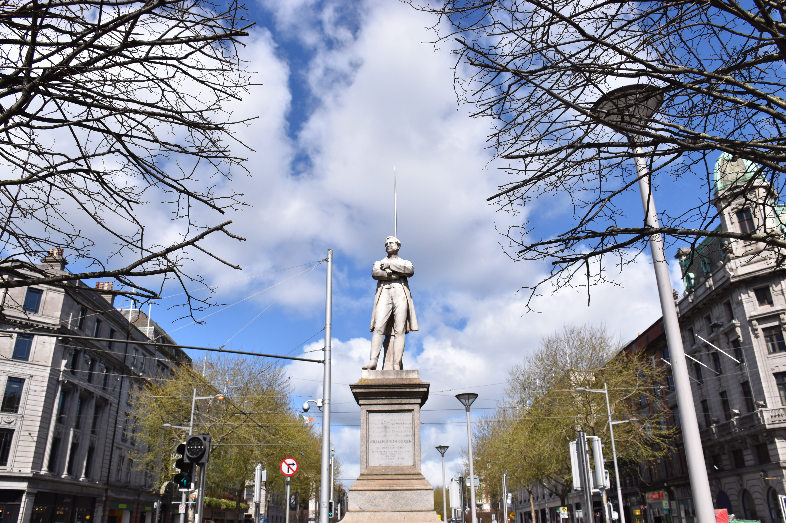
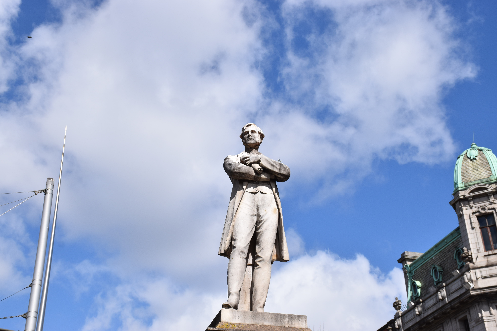
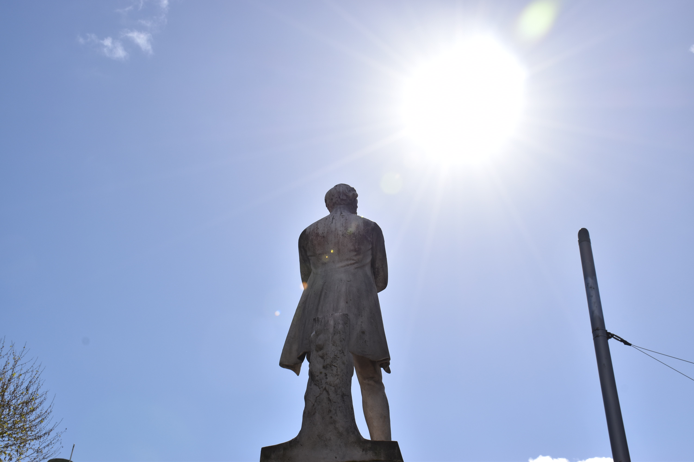
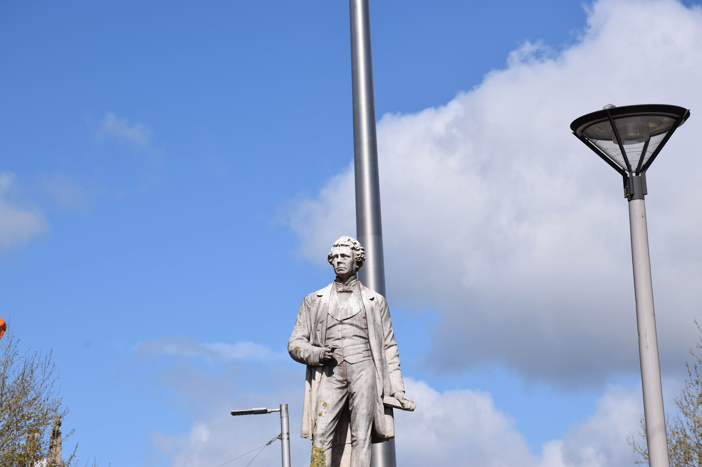

<!doctype html>
<html lang="en">

<head>
    <meta charset="utf-8">
    <meta name="viewport" content="width=device-width, initial-scale=1, shrink-to-fit=no">
    <meta name="theme-color" content="#3ab54a" />
    <title>Irish Statues </title>

    <link href="images/logo_updated.webp" rel="shortcut icon">

    <link rel="stylesheet" href="css/lineicons.css">
    <link rel="stylesheet" href="css/fancybox.min.css">
    <link rel="stylesheet" href="css/swiper.min.css">
    <link rel="stylesheet" href="css/bootstrap.min.css">
    <link rel="stylesheet" href="css/style.css">
</head>

<body>
    <div class="cursor js-cursor"></div>
    <div class="preloader">
        <figure> </figure>
    </div>
    <!-- end preloader -->
    <div class="page-transition">
        <div class="layer"></div>
        <!-- end layer -->
    </div>
    <!-- end page-transition -->
    <main id="main">
        <nav aria-label="Site Menu" class="navbar">
            <div class="top-nav d-none d-lg-flex container-fluid">
                <div class="container">
                    <div class="col-md-3 col-sm-auto">
                        <ul class="nav social">
                            <li><a href="https://www.linkedin.com/in/irish-historical-buildings-a43b0a243/" rel="noreferrer" target="_blank"><span class="sr-only">Linkedin</span><em class="lni lni-linkedin-original"></em></a></li>
                            <li><a href="https://www.facebook.com/people/Irish-Historical-Buildings/pfbid0314x4RBfhPRn59HpnTtwCUVaFqzVhyG8b1pH6LiURm5tJqogRgLRLjvvrvXfYAbmbl/" rel="noreferrer" target="_blank"><span class="sr-only">facebook</span><em class="lni lni-facebook"></em></a></li>
                            <li><a href="https://twitter.com/BuildingsIrish" rel="noreferrer" target="_blank"><span class="sr-only">twitter</span><em class="lni lni-twitter"></em></a></li>
                        </ul>
                    </div>
                </div>
            </div>
            <div class="container">
                <div class="logo"> <a href="index.html"></a> </div>
                <!-- end logo -->
                <div class="site-menu">
                    <ul>
                        <li><a href="index.html">Home</a></li>
                        <li class="active"><a href="Statues.html">Statues</a></li>
                        <li><a href="ireland-map.html">Ireland Map</a></li>
                        <li><a href="gallery.html">Gallery</a></li>
                        <li><a href="about.html">About Us</a></li>
                        <li><a href="contact.html">Contact Us</a></li>
                    </ul>
                </div>
                <!-- end site-menu -->
                <!-- end lang -->
                <div class="hamburger-menu d-lg-none">
                    
                        <svg width="45" height="45" viewBox="0 0 100 100">
                            <path class="line line1"
                                d="M 20,29.000046 H 80.000231 C 80.000231,29.000046 94.498839,28.817352 94.532987,66.711331 94.543142,77.980673 90.966081,81.670246 85.259173,81.668997 79.552261,81.667751 75.000211,74.999942 75.000211,74.999942 L 25.000021,25.000058" />
                            <path class="line line2" d="M 20,50 H 80" />
                            <path class="line line3"
                                d="M 20,70.999954 H 80.000231 C 80.000231,70.999954 94.498839,71.182648 94.532987,33.288669 94.543142,22.019327 90.966081,18.329754 85.259173,18.331003 79.552261,18.332249 75.000211,25.000058 75.000211,25.000058 L 25.000021,74.999942" />
                        </svg>
                </div>
                <!-- end hamburger-menu -->
            </div>
            <!-- end container -->
        </nav>
        <!-- end navbar -->
        <nav aria-label="Site Mobile Menu" class="hamburger-navigation">
            <div class="layer"></div>
            <!-- end layer -->
            <div class="container">
                <ul class="nav-menu">
                    <li><a href="index.html">Home</a></li>
                    <li class="active"><a href="Statues.html">Statues</a></li>
                    <li><a href="ireland-map.html">Ireland Map</a></li>
                    <li><a href="gallery.html">Gallery</a></li>
                    <li><a href="about.html">About Us</a></li>
                    <li><a href="contact.html">Contact Us</a></li>
                </ul>
                <div class="info-box"> <span>Follow us on Social Media</span>
                    <ul class="nav-social">
                        <li><a href="https://www.linkedin.com/in/irish-historical-buildings-a43b0a243/" rel="noreferrer" target="_blank"><span class="sr-only">Linkedin</span><em class="lni lni-linkedin-original"></em></a></li>
                        <li><a href="https://www.facebook.com/people/Irish-Historical-Buildings/pfbid0314x4RBfhPRn59HpnTtwCUVaFqzVhyG8b1pH6LiURm5tJqogRgLRLjvvrvXfYAbmbl/" rel="noreferrer" target="_blank"><span class="sr-only">facebook</span><em class="lni lni-facebook"></em></a></li>
                        <li><a href="https://twitter.com/BuildingsIrish" rel="noreferrer" target="_blank"><span class="sr-only">twitter</span><em class="lni lni-twitter"></em></a></li>
                    </ul>
                </div>
                <!-- end info-box -->
            </div>
            <!-- end container -->
        </nav>
        
        <header class="page-header lozad background-cover" data-background-image="images/William-Smith/Statue/main.jpg">
            <div class="container mb-5">
                <h1>William Smith</h1>
                <p><a href="index.html">Home</a> <i class="lni lni-chevron-right"></i> <a href="Statues.html">Statues</a> <i class="lni lni-chevron-right"></i> William Smith </p>
            </div>
        </header>
        <!-- end header breadcrumb -->
        <section class="content-section p-lg-0 pt-5">
            <div class="container">
                <div class="row">
                    <div class="col-12 d-lg-block">
                        <ul class="nav community-nav">
                            <li><a href="#statue">statue view</a></li>
                            <li><a href="#Audio">Audio</a></li>
                            <li><a href="#Video">Video</a></li>
                            <li><a href="#gallery-section">gallery</a></li>
                            <li><a href="#info">info</a></li>
                            <li><a href="#location">location</a></li>
                            <li><a href="#contacts">contacts</a></li>
                            <li><a href="#3d">3d</a></li>
                        </ul>
                    </div>
                    <div class="col-xl-8 col-lg-6">
                        <div class="site-type">
                            <h3 class="text-green">William Smith</h3>
                            <small>1803 – 1864 </small>
                        </div>
                        <!-- end site-type -->
                    </div>
                    <!-- end col-8 -->
                    <div class="col-12">
                        <div class="site-gallery-top" id="statue">
                            <h3>Statue View</h3>
                            <div id="MainImage">
                                
                                <div id="mapPins">
                                    <a href="javascript:;" onclick="document.getElementById('MainImage').style.display = 'none';document.getElementById('zoom-front').style.display = 'block';"><span style="left:49%;top:52%" onclick="openOverlay()" class="pin blink_me"><svg xmlns="http://www.w3.org/2000/svg" width="100%" height="100%"> <circle cx="10" cy="5" r="5" fill="black" /> </svg></span></a>
                                    <a href="javascript:;" onclick="document.getElementById('MainImage').style.display = 'none';document.getElementById('right').style.display = 'block';"><span style="left: 45%; top: 54% " onclick="openOverlay()" class="pin blink_me"><svg xmlns="http://www.w3.org/2000/svg" width="100%" height="100%"> <circle cx="10" cy="5" r="5" fill="black" /> </svg></span></a>
                                    <a href="javascript:;" onclick="document.getElementById('MainImage').style.display = 'none';document.getElementById('left').style.display = 'block';"><span style="left: 53%; top: 54% " onclick="openOverlay()" class="pin blink_me"><svg xmlns="http://www.w3.org/2000/svg" width="100%" height="100%"> <circle cx="10" cy="5" r="5" fill="black" /> </svg></span></a>
                                    <a href="javascript:;" onclick="document.getElementById('MainImage').style.display = 'none';document.getElementById('back').style.display = 'block';"><span style="left: 43%; top: 64%" onclick="openOverlay()" class="pin blink_me"><svg xmlns="http://www.w3.org/2000/svg" width="100%" height="100%"> <circle cx="10" cy="5" r="5" fill="black" /> </svg></span></a>
                                </div>
                            </div>
                            <div id="zoom-front" style="display: none;">
                                
                                <div id="mapPins">
                                    <a href="javascript:;" onclick="document.getElementById('zoom-front').style.display = 'none';document.getElementById('MainImage').style.display = 'block';"><span style="left:65%;top:50%" onclick="openOverlay()" class="pin blink_me"><svg xmlns="http://www.w3.org/2000/svg" width="100%" height="100%"> <circle cx="10" cy="5" r="5" fill="black" /> </svg></span></a>
                                    <a href="javascript:;" onclick="document.getElementById('zoom-front').style.display = 'none';document.getElementById('zoom-zoom-front').style.display = 'block';"><span style="left:50%;top:50%" onclick="openOverlay()" class="pin blink_me"><svg xmlns="http://www.w3.org/2000/svg" width="100%" height="100%"> <circle cx="10" cy="5" r="5" fill="black" /> </svg></span></a>
                                </div>
                            </div>
                            <div id="right" style="display: none;">
                                
                                <div id="mapPins">
                                    <a href="javascript:;" onclick="document.getElementById('right').style.display = 'none';document.getElementById('MainImage').style.display = 'block';"><span style="left:30%;top:65%" onclick="openOverlay()" class="pin blink_me"><svg xmlns="http://www.w3.org/2000/svg" width="100%" height="100%"> <circle cx="10" cy="5" r="5" fill="black" /> </svg></span></a>
                                    <a href="javascript:;" onclick="document.getElementById('right').style.display = 'none';document.getElementById('zoom-right').style.display = 'block';"><span style="left:43%;top:42%" onclick="openOverlay()" class="pin blink_me"><svg xmlns="http://www.w3.org/2000/svg" width="100%" height="100%"> <circle cx="10" cy="5" r="5" fill="black" /> </svg></span></a>
                                </div>
                            </div>
                            <div id="zoom-right" style="display: none;">
                                
                                <div id="mapPins">
                                    <a href="javascript:;" onclick="document.getElementById('zoom-right').style.display = 'none';document.getElementById('right').style.display = 'block';"><span style="left:17%;top:65%" onclick="openOverlay()" class="pin blink_me"><svg xmlns="http://www.w3.org/2000/svg" width="100%" height="100%"> <circle cx="10" cy="5" r="5" fill="black" /> </svg></span></a>
                                </div>
                            </div>
                            <div id="left" style="display: none;">
                                
                                <div id="mapPins">
                                    <a href="javascript:;" onclick="document.getElementById('left').style.display = 'none';document.getElementById('MainImage').style.display = 'block';"><span style="left: 30%; top: 40%" onclick="openOverlay()" class="pin blink_me"><svg xmlns="http://www.w3.org/2000/svg" width="100%" height="100%"> <circle cx="10" cy="5" r="5" fill="black" /> </svg></span></a>
                                </div>
                            </div>
                            <div id="back" style="display: none;">
                                
                                <div id="mapPins">
                                    <a href="javascript:;" onclick="document.getElementById('back').style.display = 'none';document.getElementById('MainImage').style.display = 'block';"><span style="left:34%;top:50%" onclick="openOverlay()" class="pin blink_me"><svg xmlns="http://www.w3.org/2000/svg" width="100%" height="100%"> <circle cx="10" cy="5" r="5" fill="black" /> </svg></span></a>
                                </div>
                            </div>
                            <div id="zoom-zoom-front" style="display: none;">
                                
                                <div id="mapPins">
                                    <a href="javascript:;" onclick="document.getElementById('zoom-zoom-front').style.display = 'none';document.getElementById('zoom-front').style.display = 'block';"><span style="left:25%;top:50%" onclick="openOverlay()" class="pin blink_me"><svg xmlns="http://www.w3.org/2000/svg" width="100%" height="100%"> <circle cx="10" cy="5" r="5" fill="black" /> </svg></span></a>
                                </div>
                            </div>
                        </div>
                        <br><br>
                    </div>

                    <div class="col-12" id="Audio">
                        <h3>Audio</h3>
                        <audio controls>
                            <source src="images/William-Smith/Audio.wav" type="audio/wav">
                            Your browser does not support the audio element.
                        </audio>
                        <br><br>
                    </div>

                    <div class="col-12" id="Video">
                        <h3>Video</h3>
                        <iframe width="100%" height="500" src="https://www.youtube.com/embed/jUQqPY8SDqk" title="YouTube video player" frameborder="0" allow="accelerometer; autoplay; clipboard-write; encrypted-media; gyroscope; picture-in-picture; web-share" allowfullscreen></iframe>
                        <br><br><br><br>
                    </div>

                    <div class="col-12">
                        <div class="site-gallery-top" id="gallery-section">
                            <h3>Gallery</h3>
                            <div class="swiper-wrapper">
                                <div class="swiper-slide">
                                    <a href="images/William-Smith/1.jpg" data-fancybox="gallery">
                                        
                                    </a>
                                </div>
                                <!-- end swiper-slide -->
                                <div class="swiper-slide">
                                    <a href="images/William-Smith/2.jpg" data-fancybox="gallery">
                                        
                                    </a>
                                </div>
                                <!-- end swiper-slide -->
                                <div class="swiper-slide">
                                    <a href="images/William-Smith/3.jpg" data-fancybox="gallery">
                                        
                                    </a>
                                </div>
                                <!-- end swiper-slide -->
                                <div class="swiper-slide">
                                    <a href="images/William-Smith/4.jpg" data-fancybox="gallery">
                                        
                                    </a>
                                </div>
                                <!-- end swiper-slide -->
                                <div class="swiper-slide">
                                    <a href="images/William-Smith/5.jpg" data-fancybox="gallery">
                                        
                                    </a>
                                </div>
                                <!-- end swiper-slide -->
                                <div class="swiper-slide">
                                    <a href="images/William-Smith/6.jpg" data-fancybox="gallery">
                                        
                                    </a>
                                </div>
                                <!-- end swiper-slide -->
                                <div class="swiper-slide">
                                    <a href="images/William-Smith/6.jpg" data-fancybox="gallery">
                                        
                                    </a>
                                </div>
                                <!-- end swiper-slide -->
                                <div class="swiper-slide">
                                    <a href="images/William-Smith/6.jpg" data-fancybox="gallery">
                                        
                                    </a>
                                </div>
                                <!-- end swiper-slide -->
                                <div class="swiper-slide">
                                    <a href="images/William-Smith/6.jpg" data-fancybox="gallery">
                                        
                                    </a>
                                </div>
                                <!-- end swiper-slide -->
                                <div class="swiper-slide">
                                    <a href="images/William-Smith/6.jpg" data-fancybox="gallery">
                                        
                                    </a>
                                </div>
                                <!-- end swiper-slide -->
                            </div>
                            <!-- end swiper-wrapper -->
                        </div>
                        <!-- end site-gallery-top -->
                        <div class="site-gallery-thumbs">
                            <div class="swiper-wrapper">
                                <div class="swiper-slide"> </div>
                                <!-- end swiper-slide -->
                                <div class="swiper-slide"> </div>
                                <!-- end swiper-slide -->
                                <div class="swiper-slide"> </div>
                                <!-- end swiper-slide -->
                                <div class="swiper-slide"> </div>
                                <!-- end swiper-slide -->
                                <div class="swiper-slide"> </div>
                                <!-- end swiper-slide -->
                                <div class="swiper-slide"> </div>
                                <!-- end swiper-slide -->
                                <div class="swiper-slide"> </div>
                                <!-- end swiper-slide -->
                                <div class="swiper-slide"> </div>
                                <!-- end swiper-slide -->
                                <div class="swiper-slide"> </div>
                                <!-- end swiper-slide -->
                                <div class="swiper-slide"> </div>
                                <!-- end swiper-slide -->
                            </div>
                            <!-- end swiper-wrapper -->
                        </div>
                        <!-- end site-gallery-thumbs -->
                    </div>
                    <!-- end col-12 -->
                    <div class="col-12">
                        <!-- <p id="info">
            site Village is a premier residential compound situated in Al Khobar Eastern Province and just 20 minutes from Bahrain Causeway.
            The village is designed to provide a lifestyle that equals the comfort and elegance of a luxurious resort while 24-hour National Guard Security offers residents a very safe environment.
            The friendly management team and staff at site Village ensure that safety, peace, and serenity are always maintained.
            A place of distinction, site Village is renowned for its 5* Customer Services and 24/7 maintenance and care.
        </p> -->
                        <ul class="bullets" id="info">
                            <li>
                                politician, was born on October 3, 1803 in Dromoland, Co. Clare, the second son of Sir Edward O'Brien
                                (1773-1837), baronet, and Charlotte (1781-1856), the elder daughter of William Smith of Cahirmoyle (or
                                Cahermoyle). William was descended from the high-king of the eleventh century, Brian Bórama.

                            </li>
                            <li>
                                Much of William's education took place in England, far from his home. William attended Harrow with his
                                elder brother Lucius (later 13th Baron Inchiquin) and followed him to Trinity College, Cambridge, in
                                1821, where he graduated in 1826 .
                            </li>
                            <li>
                                William Smith followed in his father's footsteps, becoming a conservative member of Parliament for
                                Ennis from 1828 to 1831. His first speech as an MP (3 June 1828) advocated for paper money. On July 3,
                                1828, in parliament, William supported Catholic claims. He joined the Catholic Association of Daniel
                                O'Connell (qv), but opposed O'Connell's election to Clare in 1828 with his family.
                            </li>
                            <li>
                                After leaving parliament in 1831, O'Brien married Lucy Caroline Gabbett (1811-61), the eldest daughter
                                of William Gabbett, a former mayor of Limerick, on September 19, 1832. O'Brien began his political
                                career in Limerick, where he advocated for emigration, education, and port development. He then
                                bought 5,000 acres in Cahirmoyle and joined O'Connell's Anti-Tory Association.
                            </li>
                            <li>
                                However, he abandoned his marriage to Lucy Gabbett of Limerick in 1832. Smith O'Brien vociferously
                                highlighted the suffering of the Irish people in the House of Commons, calling for better government
                                and an end to Catholic discrimination.
                            </li>
                            <li>
                                The newlyweds chose Cahermoyle House as their permanent residence. They had seven children from
                                their happy marriage. From 1835 to 1848, William returned to politics as the Member of Parliament for
                                Limerick County.
                            </li>
                            <li>
                                and since 1835, when he was returned for Limerick County .
                            </li>
                            <li>
                                He gradually shifted into a nationalist stance, influenced by Young Ireland, and declared for the repeal of
                                the Union in 1843. He also shifted from advocating nonviolent agitation to experimenting with armed
                                protest. He was tried in Dublin in May 1848 for making an inflammatory speech, but no verdict was
                                returned. A planned August uprising devolved into a farcical riot in Ballingarry, Co. Tipperary, during
                                which O'Brien explained that he had no food to give his followers and had no intention of causing
                                property damage. An assault on 46 police officers who were holed up in Widow McCormack's cottage,
                                James Buchanan, the US ambassador to Britain, intervened with the British government. On 22 February
                                1854, Lord Palmerston, now Home Secretary in the Aberdeen Government, recommended a conditional
                                pardon for the transported Young Ireland exiles and Chartists. They were still barred from entering the
                                United Kingdom. The threat of war with Russia prompted the British government to appease Irish public
                                opinion by freeing such a popular leader.
                            </li>
                            <li>
                                O'Brien was pardoned and returned to Europe in 1854, but it wasn't until 1856 that he was allowed to
                                return to Ireland. William Smith O'Brien died on June 18, 1864, from a liver complaint. William died
                                calmly and courageously on June 18, 1864, in the presence of his family. His death was widely publicized
                                around the world. His body was transported by ship from Wales to Dublin, arriving at the quayside in the
                                early morning hours. Mourners were heartbroken when they learned that the remains would arrive in
                                Dublin on the Cambria in the early morning of June 23.
                            </li>
                            <li>
                                Nonetheless, people from all over the country flocked to Dublin on their own. A contingent of 200
                                members of the National Brotherhood of St. Patrick marched two abreast to meet the Cambria at the
                                North Wall. 20,000 people followed the hearse to Kingsbridge Station for rail transport to Limerick and
                                then to Cahirmoyle. He passed away at the age of sixty. He was later buried in the Rathronan churchyard
                                in County Limerick.
                            </li>
                            <li>
                                On 25 June local aristocracy, Catholic and Protestant clergy, and ordinary people in their masses accompanied their hero to Rathronan graveyard.

                            </li>
                            <li>
                                Source ((William Smith: William Smith O'Brien 1803-1864 By: Richard Davis).
                            </li>
                        </ul>
                    </div>
                    <!-- end col-7 -->
                    <div class="col-12">
                        <!-- end site-info-box -->
                        <div class="site-info-box" id="location">
                            <h6>Location</h6>
                            <div class="row units">
                                <iframe src="https://www.google.com/maps/embed?pb=!1m14!1m8!1m3!1d148.85748797648455!2d-6.2596114!3d53.3482717!3m2!1i1024!2i768!4f13.1!3m3!1m2!1s0x48670e84f62beec9%3A0xd5e887d8a820eac5!2sWilliam%20Smith%20O&#39;Brien%20Statue!5e0!3m2!1sar!2seg!4v1684380857752!5m2!1sar!2seg" width="100%" height="500" style="border:0;" allowfullscreen="" loading="lazy" referrerpolicy="no-referrer-when-downgrade"></iframe>                            </div>
                        <!-- end site-info-box -->
                        <div class="site-info-box mb-0 mb-lg-5" id="contacts">
                            <h6>Contacts</h6>
                            <div class="row contacts w-100 text-center">
                                <div class="col-lg-6">
                                    <address class="single-contact">
                                        <i class="lni lni-map-marker"></i>
                                        <p>
                                            O'Connell Street Upper, North City, Dublin
                                        </p>
                                    </address>
                                </div>
                                <div class="col-lg-6">
                                    <div class="phone single-contact">
                                        <i class="lni lni-phone"></i>
                                        <p><strong>Phone:</strong>  No Phone </p>
                                    </div>
                                </div>
                            </div>
                        </div>

                        <div class="site-info-box" id="3d">
                            <h6>3D View</h6>
                            <div class="row units">
                                <iframe src="https://www.google.com/maps/embed?pb=!4v1684380910010!6m8!1m7!1scG44LEWFbZiTLcdEHRCWmw!2m2!1d53.34814108856095!2d-6.259433985842666!3f312.8440777616918!4f-11.69040346306599!5f0.7820865974627469" width="100%" height="500" style="border:0;" allowfullscreen="" loading="lazy" referrerpolicy="no-referrer-when-downgrade"></iframe>                                
                            </div>
                        </div>
                        <!-- end site-info-box -->
                    </div>
                    <!-- end col-12 -->
                </div>
                <!-- end row -->
            </div>
            <!-- end container -->
        </section>

        <footer class="footer">
            <div class="container">
                <div class="row">
                    <!-- end col-2 -->
                    <div class="bottom-bar col-12 justify-content-center" style="text-align: center;">
                        <span class="copyright">Copyrights reserved © Irish Statues 2023</span>
                    </div>
                    <!-- end col-12 -->
                </div>
                <!-- end row -->
            </div>
            <!-- end container -->
        </footer>
        <!-- end footer -->
    </main>


    <button type="button" id="scroll-top" class="d-none">
        <i class="lni lni-chevron-up"></i>
    </button>
    <!-- End Scrolltop -->

    <!-- JS FILES -->
    <script src="js/jquery.min.js"></script>
    <script src="js/bootstrap.min.js" defer></script>
    <script src="js/fancybox.min.js" defer></script>
    <script src="js/swiper.min.js" defer></script>
    <script src="js/overscroll.js" defer></script>
    <script src="js/TweenMax.min.js" defer></script>
    <script type="text/javascript" src="https://cdn.jsdelivr.net/npm/lozad/dist/lozad.min.js" defer></script>
    <script src="js/preloader.js"></script>
    <script src="js/scripts-server.js" defer></script>
</body>

</html>